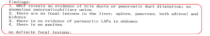

手術、分子標的薬、温熱療法 を受けている中で、アントロキノノールを併用開始
治療前の状態

当クリニックが勧める方法を実践した後の状態

Tさんは2005年12月の定期健診で、腫瘍マーカーのCEAが異常な値を示し、その値は15ng/dl(標準値は5ng/dl)でした。更に検査を行ったところ、特に異常はなく、毎月定期健診をすることになりました。
半年後の定期健診(2006年6月)で腫瘍マーカーのCEAが断続的に上昇していたので、レントゲンを撮影した結果、肺癌と診断されました。
肺癌と診断された後、2006年7月に緊急手術が行われ、胸を開いてみると、レントゲンで見つかった2センチメートルの2個の腫瘍のほかに、左肺葉と胸膜に転移が見つかり、なすすべがありませんでした。
そして、余命宣告を受けました。
その後Tさんは一年半、分子標的治療等を受け、癌をコントロールしていました。しかし、腫瘍マーカーのCEAの動きは激しく、癌の安定化には至りませんでした。
そこで2008年にTさんの友人である医師の紹介でアントロキノノール含有エキスの摂取を始めました。
Tさんはアントロキノノール含有エキスを服用し続け、毎月定期健診をしていたところ、病状は改善されていきました。そして一年後の2009年7月24日の各種検査でがん細胞は検出されなくなり、他の検査の数値も安定していました。
Tさんは現在もお元気にお過ごしでいらっしゃいます。
244,000円（3か月セット）×3回＝732,000円
分子標的薬ネクサバール を受けている中で、アントロキノノールを併用開始
治療前の状態
（2011年5月）

ネクサバール使用後の状態
（2011年6月）

当クリニックが勧める方法を
実践した後の状態

Sさんはアントロキノノール含有エキスを服用して癌を克服された方です。Sさんのお嬢様より、その経験を共有したいとのお思いから、お手紙をいただきました。
Sさんは糖尿病の透析治療をされており、2011年1月の１回目の検査で肝臓に8センチ大の腫瘍が発見されました。手術で肝臓の腫瘍を切除した後、術後3ヶ月の定期検査では状態は良好でした。
しかし、4ヶ月後の2011年5月に肺に転移した癌細胞がみつかりました。
医師との相談の結果、肝臓癌分子標的薬のネクサバールで治療することを決めました。ただ期待できる効果としては3ヶ月程度の延命で、他の治療法はありませんでした。
ネクサバールを服用して6週間後、肺のレントゲンでは細かい癌細胞が点在していました。
そして、2011年7月10日からアントロキノノール含有エキスを服用開始しました。
すると、予想外の奇跡が起こりました。1ヶ月も経過しない、2011年8月3日に再度レントゲン検査をした際に、担当医師はとても驚いた様子で「肺の癌細胞がすべてなくなっている」と言いました。念のため再度レントゲンを撮影して確認しました。
主治医はとても不思議だと繰り返し発言していたということです。末期癌患者の癌細胞がわずか数週間で消えるのは見たことがないということでした。
87,000円（1か月セット）×1回＝87,000円
治療前の状態

当クリニックが勧める方法を
実践した後の状態

Wさんは2012年8月に健康診断を受けたところ、膵管の拡張が見つかりました。ただ腹部CTの結果では異常が認められなかったため、すい臓のCTを撮ったところ、遠位主膵管の拡張が見られました。そのため更なる精密検査が必要と判断し、9月に上部消化管のEUS検査を実施したところ、6.5mmの低エコー腫瘤と遠位主膵管の拡張が見られ、すい臓腫瘍の疑いが強まりました。
そのため、速やかに治療を開始し、精密検査MRCPとEUC-FNAが必要であると判断しましたが、Wさんが9月に出張を控えていたため、10月上旬に入院をすることとなりました。
Wさんは今すぐ始められることとして、アントロキノノールの摂取を9月の検査時から開始し、出張から帰った10月上旬に入院検査を実施しました。その結果、
１胆管及び膵管の拡張
２肝臓、脾臓、膵臓、腎臓
３腹部大動脈周囲リンパ節
４腹水
4つ膵臓がんに関する病変は認められない
という結果となりました。
その後、定期的に検査はしておりますが、異常は見つかっておりません。
87,000円(1ヶ月セット）×1回＝87,000円
Mさんは2016年11月に健康診断を受けたところ、前立腺に異常が見つかり、PSAマーカーが40（基準値は4ng/ml以下）ありました。
そのため病院で治療計画が速やかに策定されるなか、Mさんは2016年12月からアントロキノノールの摂取を始めました。
2017年4月から病院でのホルモン治療が始まり、翌5月に検査が行われたところ、PSAマーカーが1.15まで下がっていました。その後7月の検査では0.298、翌2018年1月で0.015、10月は0.003と数値は良くなり続けており、元気にお過ごしになっています。
900,000円(1年セット）×2＝1,800,000円
骨に転移した末期の肺腺がん。転移したがんは消失し、病状は安定/ml以下）ありました。
Ｌさんは2010年に肺腺がんと診断されました。既にステージ4で、骨に転移もしていました。医療機関での治療は化学療法のみ。そこでＬさんは、2011年1月に始まった化学療法の助けになればとアントロキノノール含有エキスを飲みはじめました。
同年3月に検査を受けたところ、肺のがんに変化はないものの、骨に転移したがんは縮小していました。
同年6月、検査の結果、肺のがんに変化は認められませんでしたが、骨に転移したがんが消失していました。
Ｌさんはアントロキノノール含有エキスの服用を減らし、化学療法との併用を続けました。翌2012年11月、がんに変化はありませんでしたが病状は安定しています。
末期の肺腺がんが消失し、転移した脳のがんも消えた
Ｓさんは末期の肺腺がんと診断され、脳にも転移していました。治療は化学療法ですが、Ｓさんは抗がん剤にアントロキノノール含有エキスを併用することにしました。
２か月後、肺のがんが消失。さらに１ヶ月半服用し続けたところ、脳のがんも消失していました。
その後、高濃度アントロキノノールを減量し、半年経過しましたが、再発もなく、よい状態が続いています。
がんが４分の１以下に縮小、余命３ヶ月のはずが１年以上穏やかに暮らしている
Ｈさんは今年93歳になりました。しばらく前から老人ホームで暮らしていらっしゃいます。高齢ですが大変明晰で、これまで健康管理は全て自分でやってきた方です。
一昨年、食事がうまく飲み込めないとして内科にかかったところ、進行した下咽頭がんであることがわかりました。医師からは「余命３ヶ月」と告げられました。
下咽頭はのどの奥、食道のすぐ上にあり、食物が通り、声帯があり、呼吸器でもありと多くの生命活動に関わる部分です。どんな治療も負担が大きく難しい場所であること、また高齢であることから、Ｈさんは治療を一切受けないことを決断しました。
本当にＨさんらしいと思いますが、だから何もしないというのも医師としてはお勧めできません。ご家族のお気持ちも我々医師と同じでしょう。そのような中、アントロキノノール含有エキスをＨさんに勧めてみました。Ｈさんも納得してアントロキノノールを飲み始めました。
Ｈさんはいろいろと調べたらしく、アントロキノノール含有エキスがどんなものなのか理解していました。とても冷静な人なので、そうでなければ飲まなかったと思います。アントロキノノールを飲むだけで治療は全くせず、定期的に検査だけ受けていました。
アントロキノノール含有エキスを飲み始めて１年後、担当医がＣＴの写真を確認しながら、
「不思議だねえ。がんが変化していないだけじゃなく、小さくなってる」とおっしゃったとのことです。
１年前のＣＴ写真とその時の写真を比べると、がんの大きさは４分の１から５分の１に小さくなっていました。これには医師や本人だけでなく周辺のスタッフも驚き、病院全体の話題になりました。
既に「余命３ヶ月」どころか１年以上が経過しておりますが、Ｈさんに体調の変化はありません。QOLを下げてしまう治療を受けないことを決めたＨさんが、がんで苦しむことになることを心配していましたが、苦痛どころか違和感もないご様子で、今でも元気で穏やかに日々を過ごしていらっしゃいます。